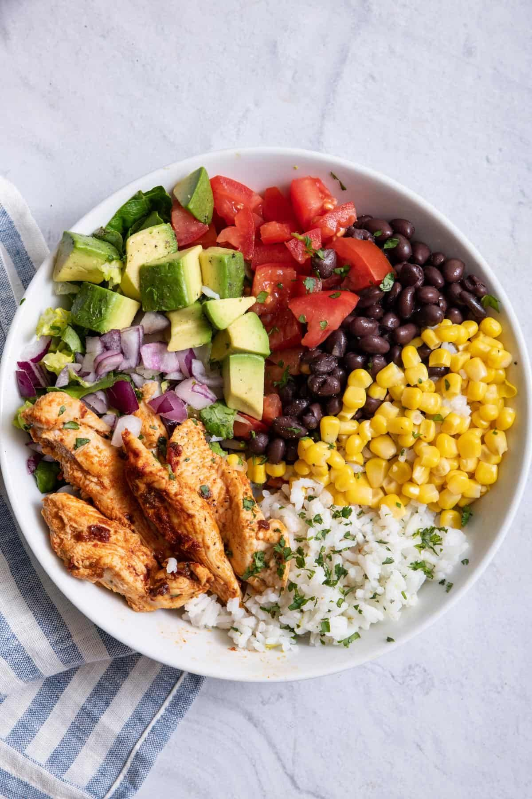

˚˖𓍢ִ໋❀ DAILY MENU! ˚˖𓍢ִ໋❀
| Time |
Monday |
Tuesday |
Wednesday |
Thursday |
Friday |
| Breakfast |
Pancakes |
Oatmeal |
Corned Beef |
Eggs |
French Toast |
| Lunch |
Burrito Bowl ☆ |
Creamy Pesto |
Sinigang |
Kare-kare |
Spud |
| Dinner |
Bolognese |
Chicken Rice Bowl |
Burger |
Pizza |
Pork Knuckles |
=========================================
-- BURRITO BOWL --
recipe from Yumna Jawad - Feel Good Foodie
view here!
.✦ ݁˖ INGREDIENTS .✦ ݁˖

CHICKEN
- 2 Tbsp Olive Oil
- 3 Tbsp Lime Juice
- 3 Chipotle Chilis in Adobo Sauce
- 1 ½ Tsp Garlic Powder
- ¾ Tsp Salt
- 1 ½ Pounds Chicken Breast (cut into strips)
CILANTRO LIME RICE
- 1 cup long-grain white rice rinsed
- 1 ½ cups water
- ¼ teaspoon salt plus more to taste
- 1 lime zested plus 2 tbsp fresh lime juice
FOR ASSEMBLY
- 1 head romaine lettuce chopped
- 1 cup tomatoes diced
- 1 cup frozen corn thawed
- 1 (15-ounce) can black beans rinsed and drained
- ½ small red onion chopped
- Guacamole or diced avocado
=========================================
⋆౨ৎ˚⟡˖ ࣪ INSTRUCTIONS ⋆౨ৎ˚⟡˖
- To make the chicken, stir together oil, lime juice, chopped chilies, adobo sauce, garlic powder, and salt in a large bowl. Add chicken and toss to coat. Cover and let sit in the refrigerator for at least 2 hours or up to overnight.
- Heat a large pan over medium-high heat. Remove chicken from marinade, and add to pan. Cook, stirring, until cooked through, about 5 minutes. Set aside.
- To make the rice, add salt and rice to a pot of boiling water. Return to a boil, then reduce heat, cover, and simmer until water is absorbed and rice is tender, 15-18 minutes. Uncover and fluff with a fork, then toss in lime zest, lime juice, cilantro, and additional salt to taste.
- To assemble, arrange rice and lettuce in the bottom of a serving bowl and top with the chicken, diced tomatoes, diced avocados, corn, black beans and red onions.